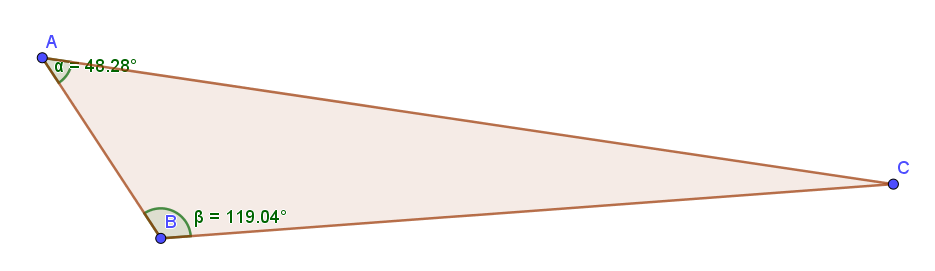

Chapitre 5 – Cartographie et localisation
Calculer des distances : la triangulation
1 La loi des sinus hors programme
Regarde la vidéo ci-dessous.
Cliquer ici si la vidéo ne s’affiche pas.
Loi des sinus (XIᵉ siècle)
On considère un triangle ABC quelconque :
- a = BC et α = angle formé par [AB] et [AC] ;
- b = AC et β = angle formé par [BA] et [BC] ;
- c = AB et γ = angle formé par [CA] et [CB].
On appelle loi des sinus l’égalité suivante :
On en déduit le résultat suivant :
Act. Distances Brest – Rennes – Quimper
On cherche à calculer la distance entre Brest et Rennes, ainsi que la distance entre Quimper et Rennes.
Le point A correspond à la ville de Brest, le point B à Quimper et le point C à Rennes. Comme dans la vidéo, on connaît trois données : la distance entre Quimper et Brest est de 52 km (longueur c), l’angle Rennes-Brest-Quimper mesure 48,28° (angle α) et l’angle Rennes-Quimper-Brest mesure 119,04° (angle β).

Détermine la valeur de l’angle γ, angle formé par [CA] et [CB]. On sait que la somme des angles d’un triangle fait 180°.
En utilisant la formule des sinus, calcule la distance b correspondant à la distance entre Brest et Rennes.
En utilisant la formule des sinus, calcule la distance a correspondant à la distance entre Quimper et Rennes.
Utilise le site Géoportail et l’outil « Mesurer » pour vérifier si tes résultats semblent pertinents.